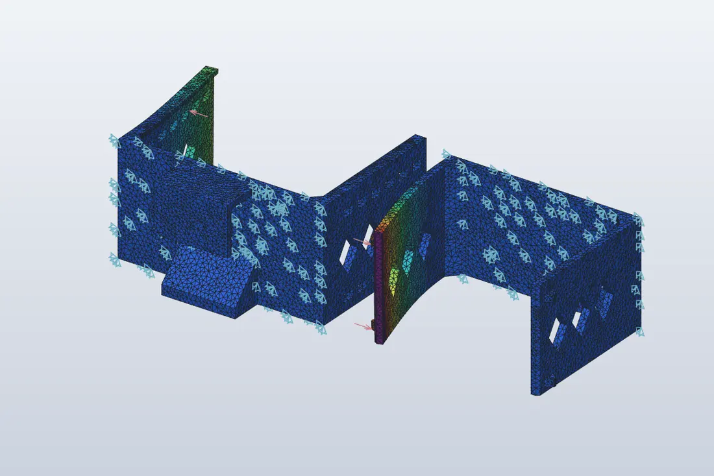
Idee
Ein ausziehbarer Rahmen fürs Türfach, ohne Boden: Die Sachen stehen auf dem Fachboden, der Rahmen hält sie nur zusammen.
- Rahmen A hängt mit einer Lasche an der Fachkante
- Auszug B rastet in 6 Stufen à 8 mm (ca. 6,3 bis 10,3 cm)
- Breite, Höhe und Rasterung als Parameter im CAD (SolidCraft)
- Erst gerechnet (FieldCraft), dann gedruckt
Entwicklung
- TestclipsHakenmaß gefunden: Laschenspalt 15 mm, Außenhaken 20 mm, Nase 13 mm.
- Erster RahmensatzZu viel Spiel, fiel beim Antippen auseinander. FieldCraft: nur 3 N Klickkraft.
- Steiftest 13-mm-Wände, Eck-Dreiecke, Rautenlöcher. Steifer, aber B fiel noch heraus.
- Steiftest 2Führungsleiste oben, Nocke greift 2 mm: 25 N Klickkraft.
- Steiftest 3Nocke greift 2,5 mm, Einführschräge an B: 41 N, mit Vorspannung ca. 46 N. Im Test.
Erst gerechnet, dann gedruckt
Simulation mit FieldCraft: PETG, linear-statisch. Jeder Stand hat dieselbe Kamera, Farbskala und Überhöhung, also einfach überblenden.
| Test | Erster Rahmen | Steiftest 2 | Steiftest 3 ohne Vorspannung | Steiftest 3 mit Vorspannung |
|---|---|---|---|---|
| Ziehen 10 N: größte Spannung | 20,4 MPa | 12,7 MPa | 12,7 MPa | 12,7 MPa |
| Ziehen 10 N: Verbiegung von A | 4,75 mm | 1,78 mm | 1,78 mm | 1,78 mm |
| Tür 49 N: Verformung | 0,16 mm | 0,04 mm | 0,04 mm | 0,04 mm |
| Klickkraft, 4 Nocken | 3 N | 25 N | 41 N | 46 N |
| Beim Klicken weicht B / A aus | – | 1,42 / 0,58 mm | 1,78 / 0,72 mm | 2,0 / 0,8 mm |
| Spannung beim Klicken | – | 9,9 MPa | 10,6 MPa | ca. 12 MPa |
| B drückt dauerhaft nach außen, je Seite | – | – | – | ca. 1,1 N |
| Bei 6 °C im Kühlschrank | – | ca. +8 % | ca. +8 % | ca. +8 % |
Rahmen A ist im Steiftest 3 unverändert gegenüber Steiftest 2, die Tests Ziehen und Tür gelten deshalb direkt. Das Klicken ist für Steiftest 3 neu gerechnet (Nocke greift 2,5 mm, B 0,3 mm niedriger). Die Vorspannung des zweiten B (vorne je Seite 0,5 mm breiter, an den Nocken davon 0,35 mm wirksam) ist aus der gerechneten Steifigkeit von A und B abgeleitet. PETG gedruckt, linear-statisch, Reibwert 0,3 angenommen. Unten jeweils zwei Stände zum Überblenden, mit gleicher Kamera, Farbskala und Überhöhung.
Klicken: Verformung (5× überhöht)
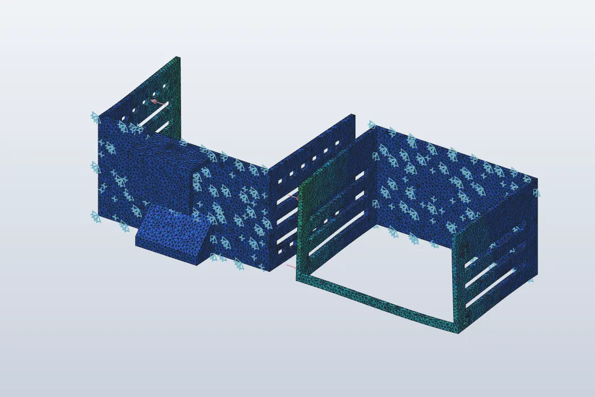
‹ ›Erster RahmenSteiftest 3Wie weit A und B beim Klicken nachgeben, jeweils beim vollen Eingriff der Nocke (1 mm, 2 mm, 2,5 mm). Oben wählst du, welche Stände du vergleichst.
Klicken: von oben
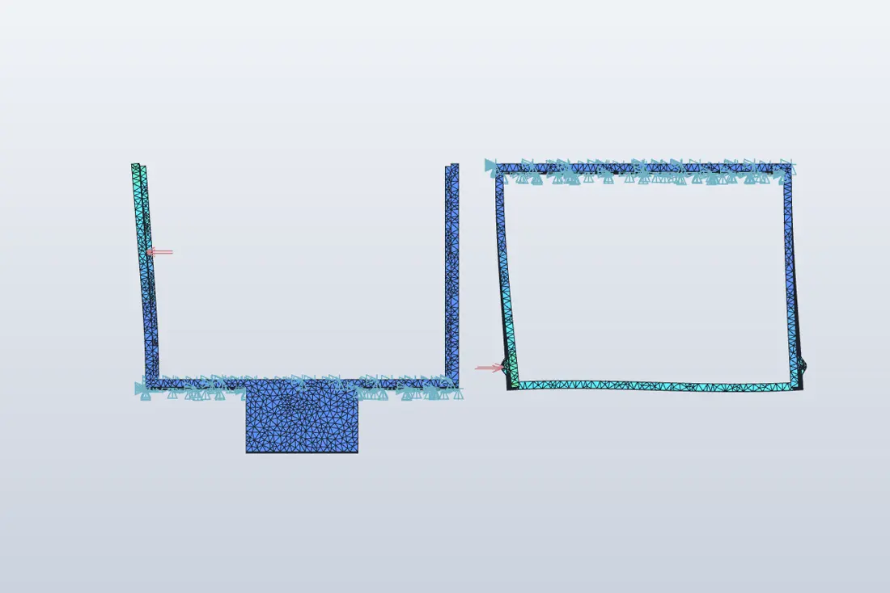
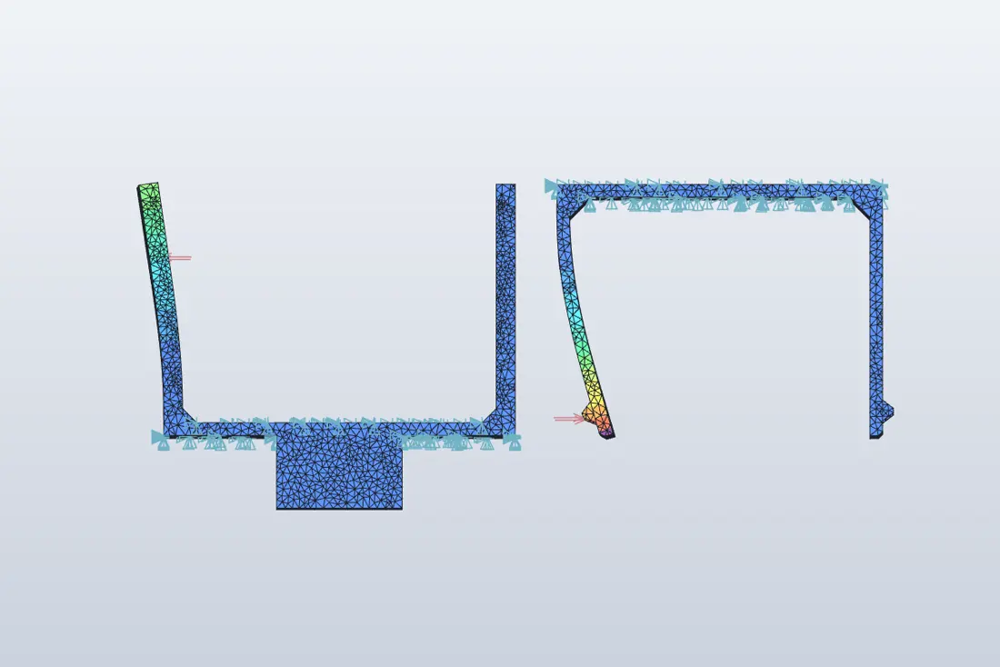
Links Rahmen A, rechts Auszug B. Beim ersten Rahmen gibt fast nichts nach, deshalb fiel er beim Antippen ab.
Klicken: Spannung
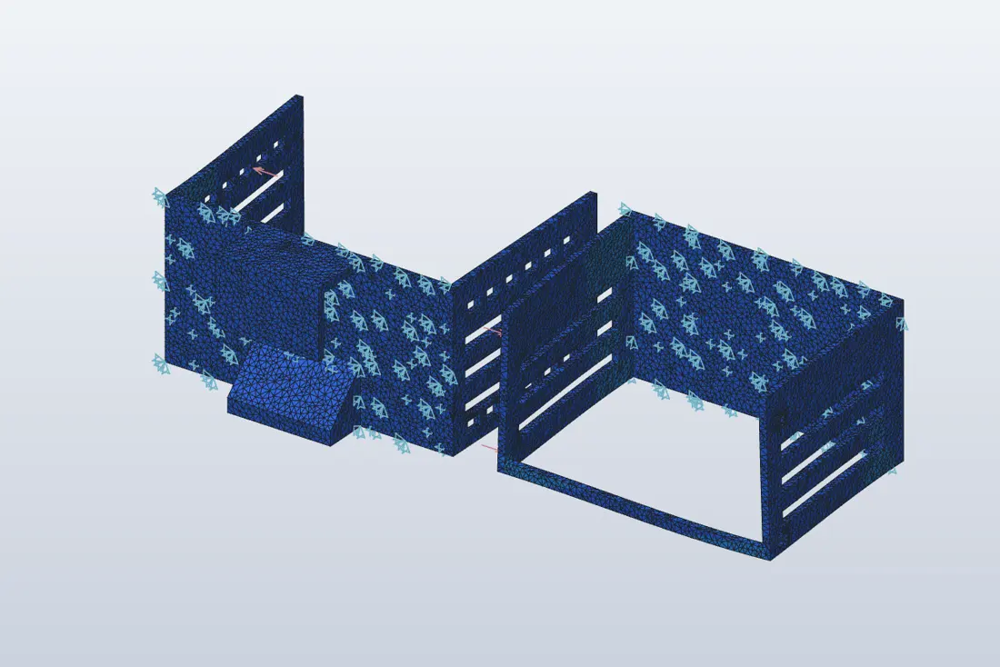
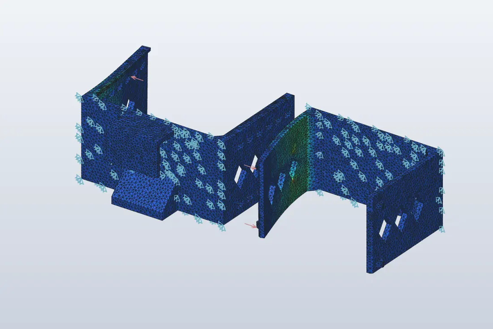
Wie stark das Material beim Klicken belastet wird. PETG hält etwa 50 MPa.
Ziehen 10 N: Verformung (5× überhöht)
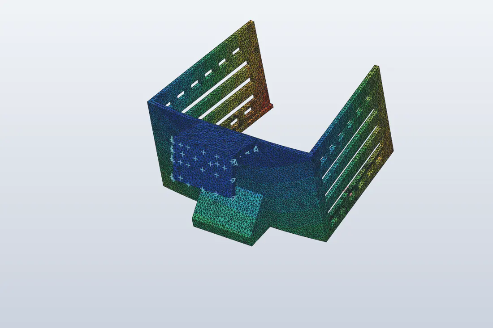
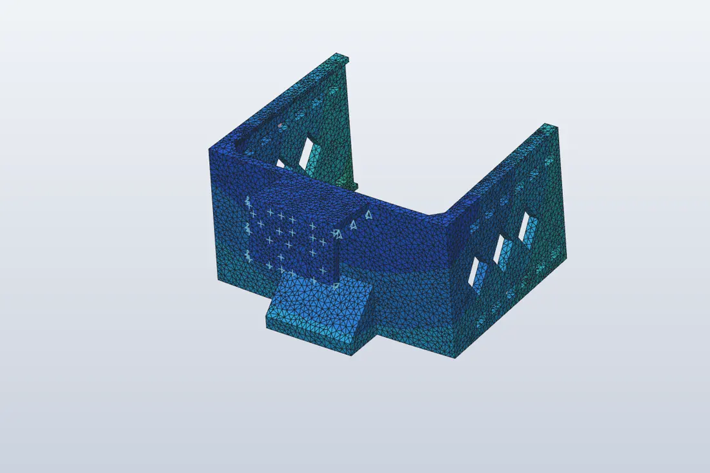
Rahmen A mit 2-mm-Wänden gegen 3-mm-Wände mit Eck-Dreiecken.
Ziehen 10 N: Spannung
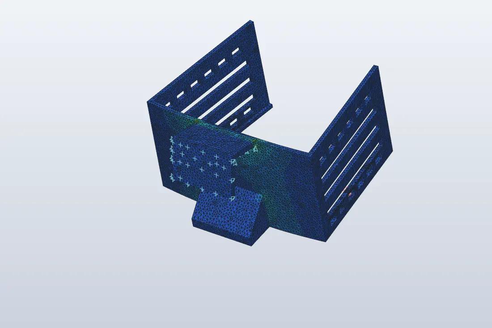
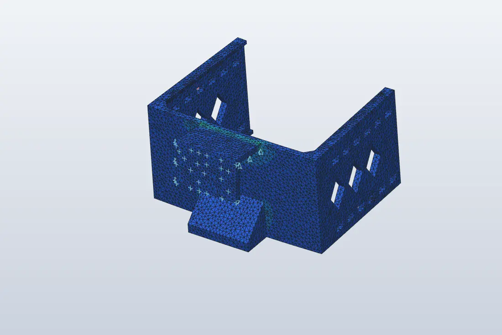
Die Spannung an der Lasche sinkt von 20,4 auf 12,7 MPa.
Tür knallt zu: Verformung (50× überhöht)
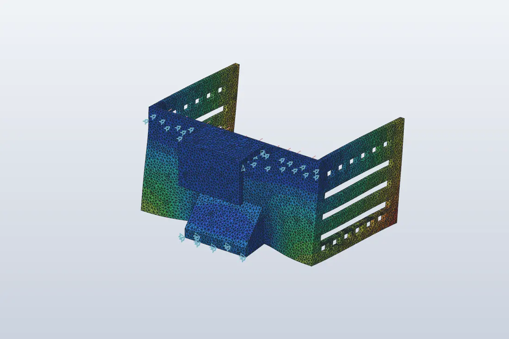
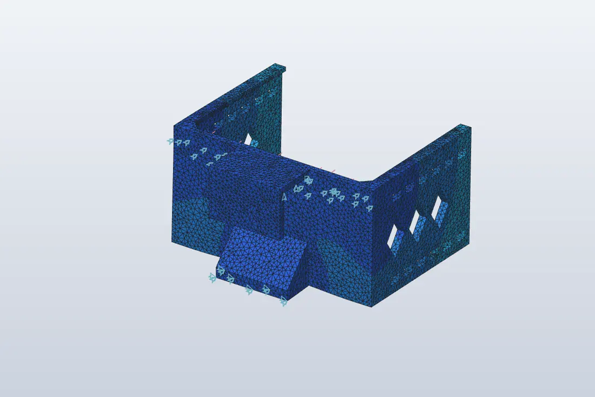
0,16 mm gegen 0,04 mm.
In 3D drehen
Ziehen zum Drehen, zwei Finger oder Mausrad zum Zoomen.
echtes Modell aus der Konstruktion · lädt erst beim Antippen
Druckbahnen Schicht für Schicht
Slice-Ansicht Steiftest 3
Alle Druckbahnen aus der echten Druckdatei, farbig nach Art. Mit dem Schichtregler sieht man, wie das Teil Schicht für Schicht entsteht. Rahmen A und zweimal Auszug B, 225 Schichten, 2 h 35 min laut Druckdatei.